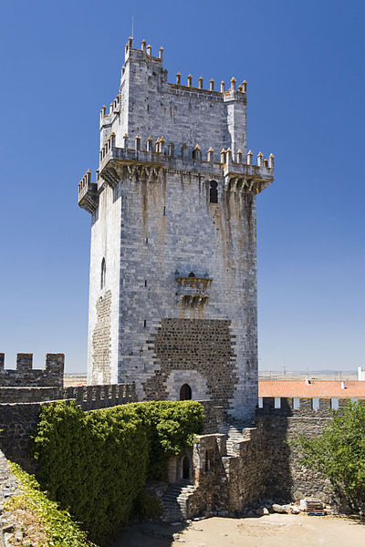

Beja é uma cidade portuguesa pertencente à região do Alentejo e sub-região do Baixo Alentejo, capital do Distrito de Beja e Capital do Baixo Alentejo com cerca de 23 400 habitantes no seu perímetro urbano, sendo a capital do Distrito de Beja e sede da Diocese de Beja.
É sede de um dos mais extensos municípios de Portugal, com 1 106,44 km² de área e 35 854 habitantes (2011), subdividido em 12 freguesias. O município é limitado a norte pelos municípios de Cuba e Vidigueira, a leste por Serpa, a sul por Mértola e Castro Verde e a oeste por Aljustrel e Ferreira do Alentejo.
O clima na cidade de Beja (a capital de distrito mais quente do país) é mediterrânico , influenciado pela distância à costa. Tem Invernos suaves e Verões quentes e longos. A neve não é muito comum, mas por vezes pode nevar em períodos mais frios do inverno. A máxima em Janeiro é de 14 °C e em Julho é de 32,8 °C. A mínima é de 5 °C em Janeiro e de 16 °C em Julho e em Agosto. A média anual anda à volta dos 17 °C. A precipitação total anual média é de 572 mm. A temperatura mais alta registada foi 45.4 °C e a mais baixa -5.5 °C.
As principais fontes de rendimento são os serviços, o comércio e a agricultura, antes destacava-se a cultura do trigo, atualmente desenvolvem-se a do olival e da vinha. A cidade está pouco industrializada, mas tem muito potencial para o ser. Em Beja estão instaladas duas importantes Empresas Públicas: a EDIA - Empresa de Desenvolvimento e Infraestruturas do Alqueva, SA. e a ANA Aeroporto de Beja.
